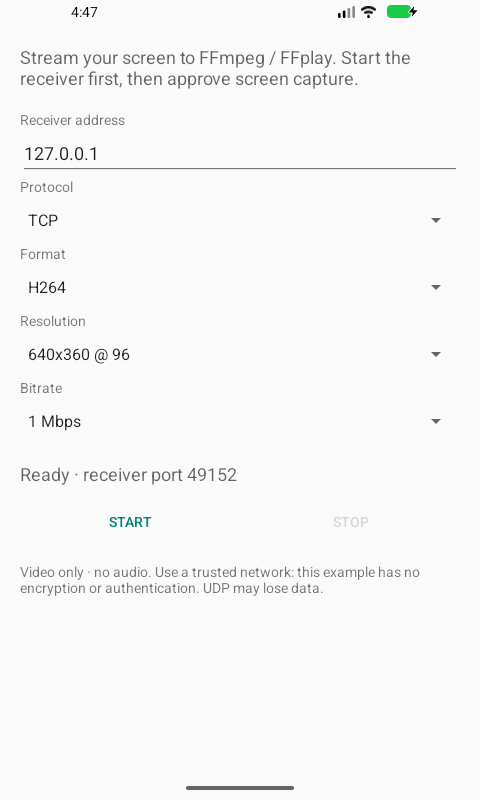

The phone does the capturing. The rest is up to you.
Watch with FFplay, record with FFmpeg, or send the same H.264 stream
through our small browser server.
01 / Android senderJava

+
Your screen. Your settings. Your consent.
MediaProjection ↓ MediaCodec
AndroidScreenCaster
A native Android example that captures your screen, encodes it
as H.264 or VP8, and sends video over TCP or UDP. Every session
starts with fresh sharing consent.
Device support depends on the encoder. Direct Wi-Fi TCP, remote LAN
browser viewing, Safari and Firefox remain unverified. The browser
device check used optional ADB forwarding; no particular latency is
promised.
Before you press Start
A few good questions.
Can I watch directly in a browser?+
The Android app sends raw TCP/UDP video. Use
AndroidScreenCasterWeb to turn its TCP/H.264 stream into WebRTC.
You run that server yourself; this page introduces the projects
and plays the original demo.
Do I need USB or a custom server?+
USB is not required for normal Wi-Fi/LAN use. FFplay or FFmpeg can
receive the stream without a custom server. USB/ADB is optional
for installation and development; browser playback uses the
companion server.
Does it include sound or remote control?+
No. Both projects stream video only. They do not capture audio or
let the viewer control the phone.
Can I use it as a public streaming service?+
These are developer examples for trusted networks. The sender
stream and companion’s HTTP page lack authentication and
encryption. Public hosting needs a separately designed access and
transport setup.